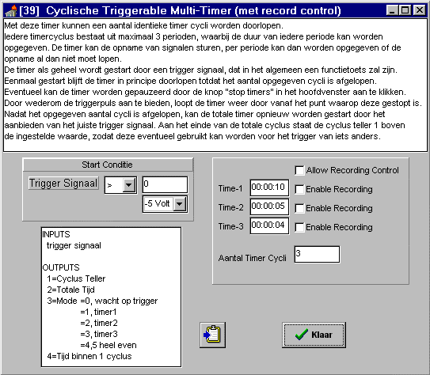

RF 2, Onset Systolische Bloeddruk
|
Met deze timer kunnen een aantal identieke timer cycli worden doorlopen.
Iedere timercyclus bestaat uit maximaal 3 perioden, waarbij de duur van iedere periode kan worden opgegeven. De timer kan de opname van signalen sturen, per periode kan worden opgegeven of de opname al dan niet moet lopen.
De timer als geheel wordt gestart door een trigger signaal, dat in het algemeen een functietoets zal zijn.
Eenmaal gestart blijft de timer in principe doorlopen totdat het aantal opgegeven cycli is afgelopen.
Eventueel kan de timer worden gepauzeerd door de knop "stop timers" in het hoofdvenster aan te klikken. Door wederom de triggerpuls aan te bieden, loopt de timer weer door vanaf het punt waarop deze gestopt is.
Nadat het opgegeven aantal cycli is afgelopen, kan de totale timer opnieuw worden gestart door het aanbieden van het juiste trigger signaal. Aan het einde van de totale cyclus staat de cyclus teller 1 boven de ingestelde waarde, zodat deze eventueel gebruikt kan worden voor het trigger van iets anders.

Voorbeeld, bij bovenstaande instelling 
|
1 = Trigger signaal |
het trigger signaal behoeft slechts 1 sample aan de opgegeven conditie te voldoen. |
|
1 = cyclus |
geeft aan in welke cyclus de timer zich bevindt, 0 = nog niet gestart 1 ... N = timer bevindt zich in deze cyclus N+1 = timer is geheel klaar |
|
2 = totale tijd |
de verstreken totaal tijd |
|
3 =mode |
welke van de 3 timers actief is 0 = geen timer actief (of tijdelijk gepauzeerd, is te zien aan waarde cyclus teller) 1 = timer 1 actief 2 = timer 2 actief 3 = timer 3 actief daarnaast komen de volgende overgangswaarden voor (maak hier geen gebruik van) 4 = overgang naar een nieuwe start van timer 1 5 = overgang naar het einde van de totaal cyclus. |
|
4 = tijd binnen een periode |
loopt dus van 0 tot de som van timer1 + timer2 + timer3 |
1 = trigger conditie
2 = trigger level
3 = number of timer cycles
4 = allow record control
5 = time 1
6 = record on in timer 1
7 = time 2
8 = record on in timer 2
9 = time 3
10 = record on in timer 3
© Instrumentele Dienst. Bijgewerkt op 8-12-1999.